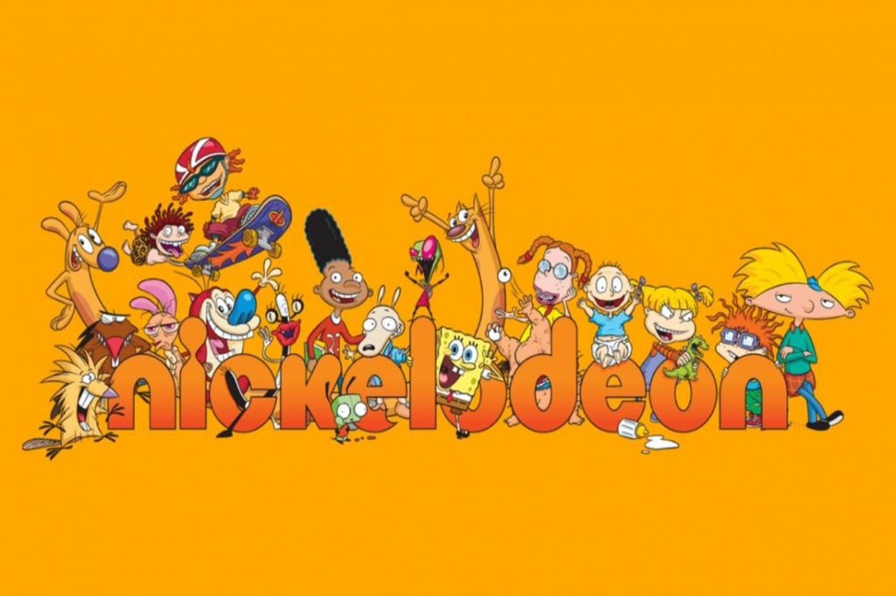
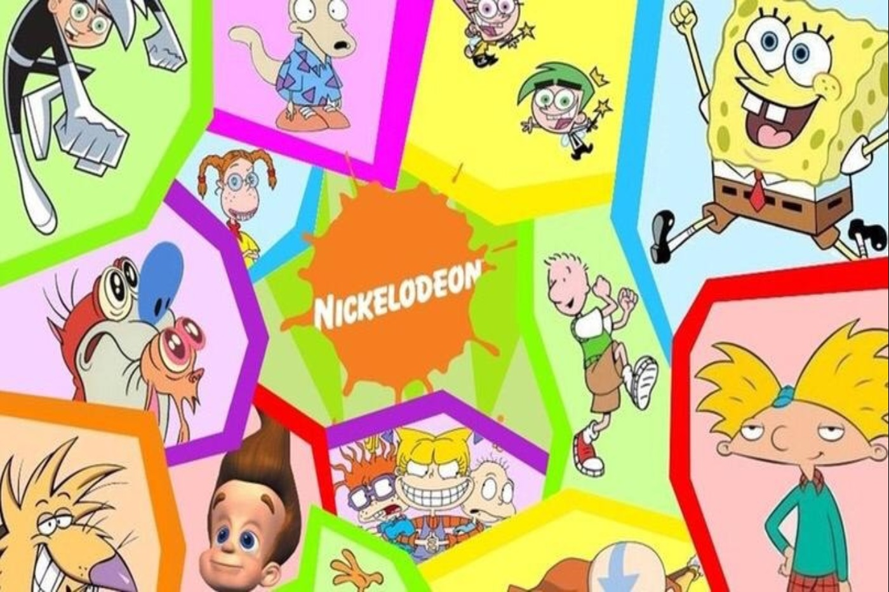
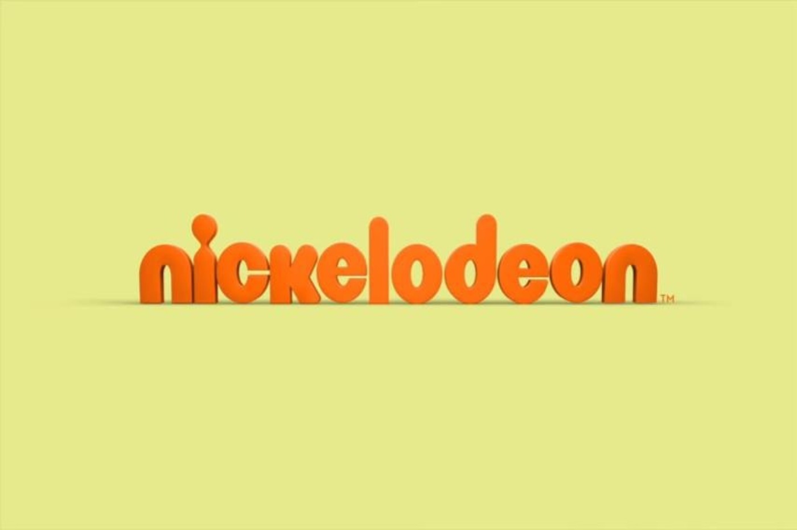
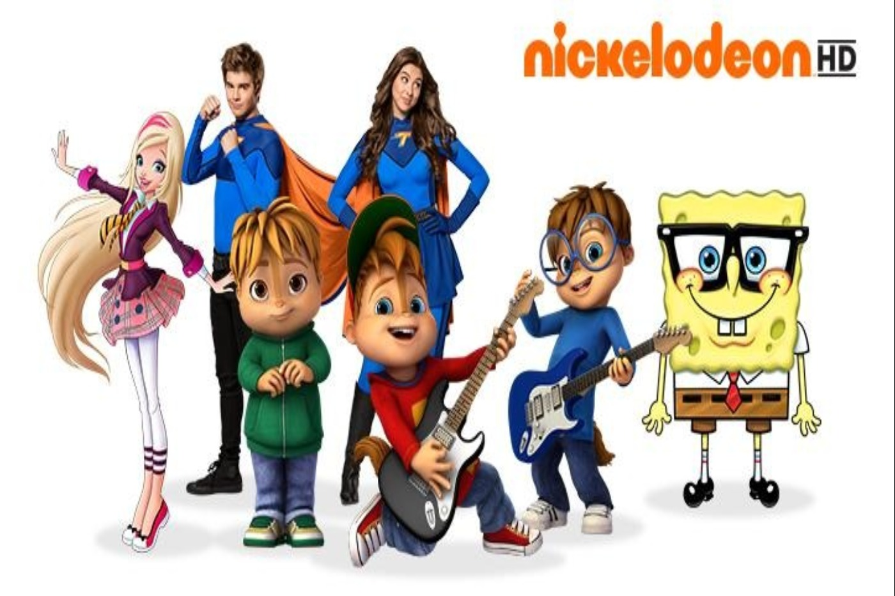

Nickelodeon
 Amina Kopenova ( Journalist )
April 22, 2020
Amina Kopenova ( Journalist )
April 22, 2020
Nickelodeon (often shortened to Nick) is an American pay television channel which was launched on December 1, 1977, as the first cable channel for children. It is owned by ViacomCBS through its domestic networks division and is based in New York City. The network's programming is primarily aimed at children and adolescents aged 2–17, while some of its program blocks target a broader family audience.
History
Twenty-five years ago, Brian Robbins was an aspiring young producer, scouring the country for talent. He assembled a troupe of teens for a sketch comedy show, “All That,” which became all that and more for Nickelodeon. The goofy show helped usher in a period of peak imagination for the children’s channel along with “Rugrats,” and then, “Blues Clues,” and “SpongeBob SquarePants.” Now, Robbins is back at the Viacom cable network in a much different role — and in a much different world. As president of Nickelodeon, Robbins is trying to rescue the beloved operation from becoming a casualty of the streaming wars. Earlier this week, Viacom announced that Robbins soon will be segueing into a larger role as president of kids and family entertainment for the soon-to-be merged ViacomCBS. Robbins is tasked with not only turning Nickelodeon around, but also helping the entire company craft a comprehensive strategy to survive, and thrive, in the hyper-competitive streaming era.
Nickelodeon grew in popularity and was distributed in nearly 100 million American homes. “Rugrats,” “SpongeBob SquarePants” “Dora the Explorer” and other shows became multibillion-dollar merchandise franchises (“SpongeBob” once attracted more than 3 million viewers an episode). Nickelodeon was so popular that pay-TV distributors, and millions of parents, found that they couldn’t live without it, so Viacom extracted premium fees for its programming. Then came Netflix. The cable channel began licensing reruns of “SpongeBob” and other popular shows to the budding streaming service, which Netflix then offered commercial-free to its subscribers. Netflix quickly became a destination for kids. As cord-cutting accelerated, Nickelodeon’s ratings slide intensified.

Is Nickelodeon still popular?
The children’s network has lost nearly 60% of its audience since 2010, according to Nielsen ratings data. And in Viacom’s recently ended fiscal year, Nickelodeon’s viewership among its core audience of children ages 2 to 11 slumped 28% compared to fiscal 2018, according to Bernstein & Co. “Nickelodeon is in a tough spot because of the switch to online viewing, and then you have the launch of Disney+,” said Derek Baine, longtime cable TV analyst with S&P Global Market Intelligence. “It’s not a good time to be a cable network.”
In 2012, Robbins and his producing partner, Joe Davola, recognized that pre-teens and teenagers weren’t watching TV like previous generations but were gravitating to stars on Google’s YouTube platform.So Robbins and Davola built an online network called AwesomenessTV with game shows and sketch comedies to attract viewers who were turning away from Nickelodeon, MTV and Comedy Central. In 2013, Jeffrey Katzenberg’s DreamWorks Animation acquired Awesomeness. Three years later, DreamWorks was absorbed by Comcast Corp., which placed a value of $650 million for AwesomenessTV. Last year, Viacom bought Awesomeness from Comcast for considerably less, underscoring the challenges facing internet-only media businesses.Earlier this week, in a move tinged with irony, Viacom said that in addition to the Nickelodeon networks, Robbins once again would be in charge of Awesomeness. “It’s near and dear to my heart,” he said.



Numbers of viewers
The statistic shows the number of viewers of Nickelodeon in the United States from 2010/11 to 2017/18. According to the source, an average of 1.31 million viewers tuned into the kids' TV channel in the 2017/18 TV season, down from 3.06 million in the 2010/11 season. And every year it’s decreasing.